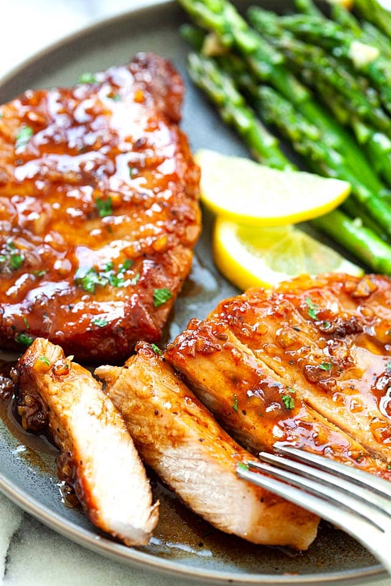

Honey Garlic Pork Chops

Description
A great roasted potato side dish made with olive oil and herbs.
Ingredients
- 1/8 cup Olive oil
- 1 tablespoon Minced Garlic
- 1/2 teaspoon dried basil
- 1/2 teaspoon dried marjoram
- 1/2 teaspoon dried dill weed
- 1/2 teaspoon dried thyme
- 1/2 teasppon dried oregano
- 1/2 teaspoon dried parsley
- 1/2 teaspoon crushed red pepper flakes
- 1/2 teaspoon salt
- 4 large potatoes, peeled and cubed
Steps
- Preheat oven to 475 degrees F (245 degrees C)
- In a large bowl, combine oil, garlic, basil, marjoram, dill weed, thyme, oregano, parsley, red pepper flakes, and salt. Stir in potatoes until evenly coated. Place potatoes in a single layer on a roasting pan or baking sheet
- Roast for 20 to 30 minutes in the preheated oven, turning occasionally to brown on all sides
Recipe from allrecipes.com